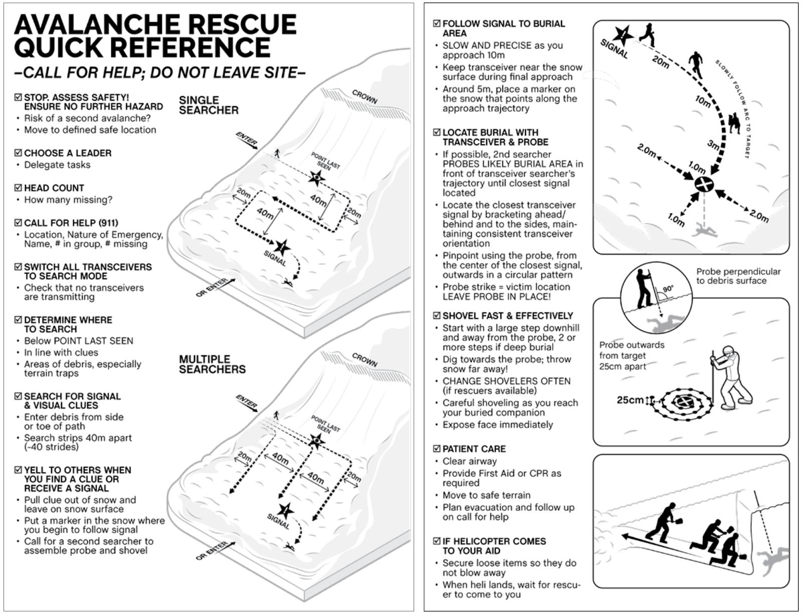

1) Scene safety + call for help
Watch for hangfire, move to safer ground if possible, contact emergency services.

Avalanche Awareness & Rescue
Rescue workflow
Time matters. This page summarizes a basic rescue flow (practice with trained instructors).
Watch for hangfire, move to safer ground if possible, contact emergency services.
All searchers switch to search. Keep communication clear and simple.
Move fast until you get a signal, then slow down as distance drops.
Probe in a pattern around the lowest reading. Leave probe in when you get a strike.
Start downhill and build a ramp. Rotate shovelers to avoid burning out.
Airway/breathing first, prevent hypothermia, coordinate evacuation.
| Item | Purpose | Practice frequency (suggestion) |
|---|---|---|
| Transceiver (Beacon) | Find buried person via signal | Monthly during season |
| Probe | Pinpoint location + depth | Monthly during season |
| Shovel | Dig efficiently | Every drill |
| Warm layers + shelter | Prevent hypothermia after rescue | Check each trip |
